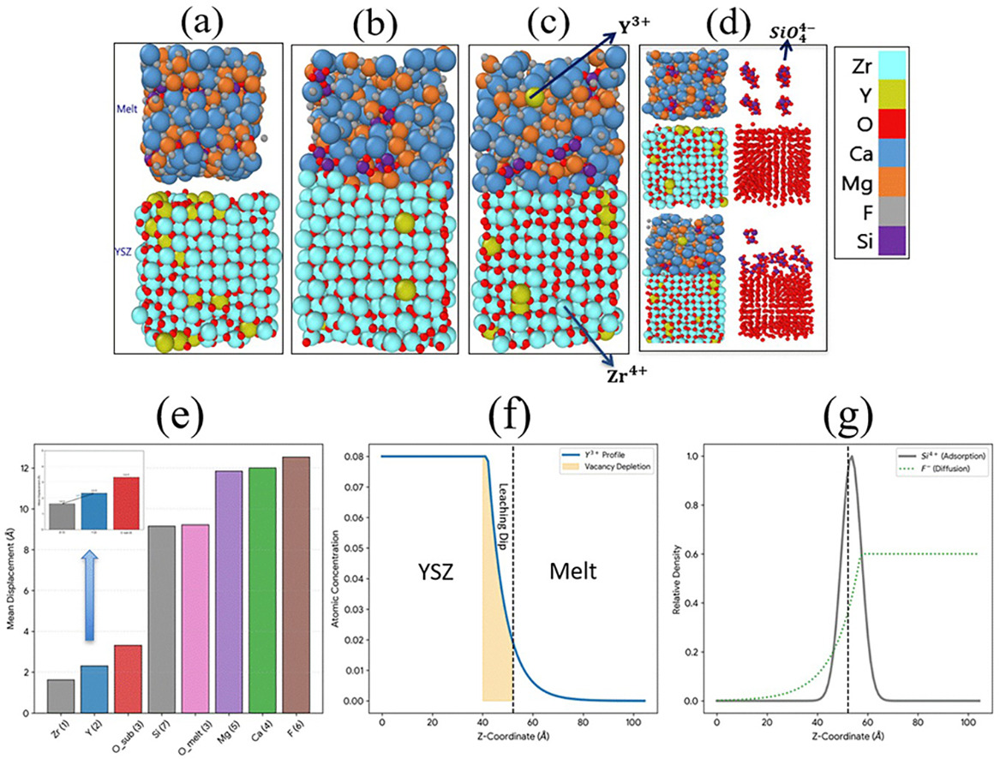

Molten Salt MLIP: Figures & MD Videos
Molten-Salt Atomistic Modeling Figure

Public-facing atomistic modeling figure. This uploaded project image is shown as a structural/trajectory visualization from the molten-salt MLIP workflow. Figure-specific quantitative interpretation will be added only where the corresponding simulation state and analysis are documented.
Early-Stage Corrosion MD Demonstration
Early-stage corrosion mechanisms between 8 mol% YSZ and CaF2–MgF2–CaO–SiO2 (YSZMelt) at 1773 K. The uploaded trajectory video provides a visual demonstration of the simulated high-temperature salt/YSZ interface evolution. It is presented as a trajectory visualization rather than as a standalone quantitative corrosion metric.
Planned Analysis Figures
Oxide-additive configurations
Salt/YSZ interface snapshots
Species-colored ion transport
Interfacial restructuring/corrosion sequence
RDF, MSD, diffusion, and concentration-profile plots
The page distinguishes structural/trajectory visualization from quantitative claims. Numerical diffusion, corrosion, and interfacial metrics should be shown only with the corresponding validated analysis.